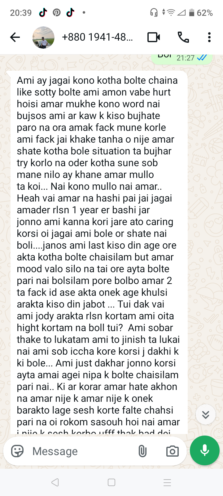
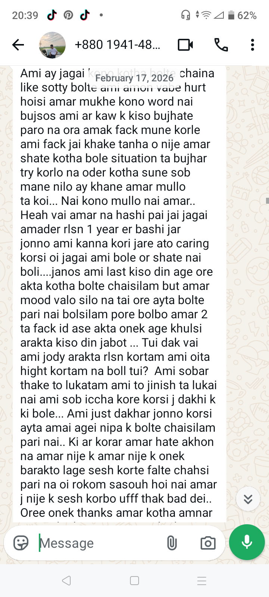
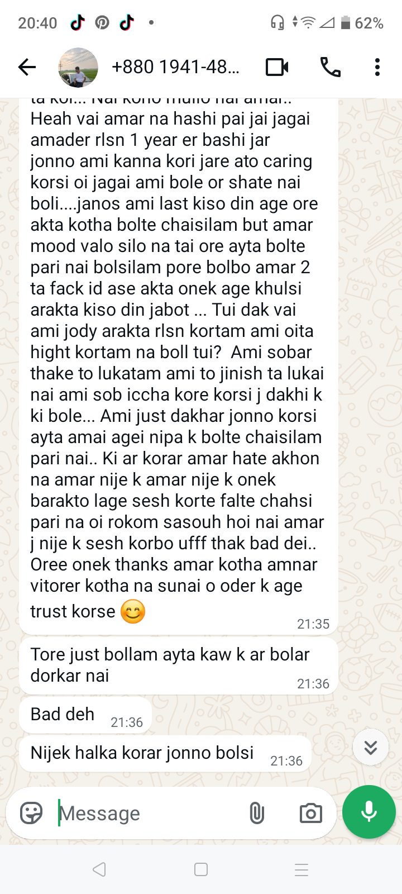
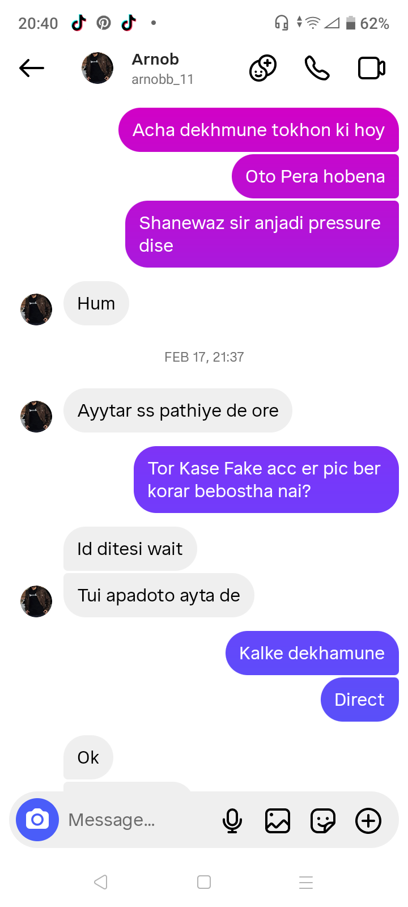
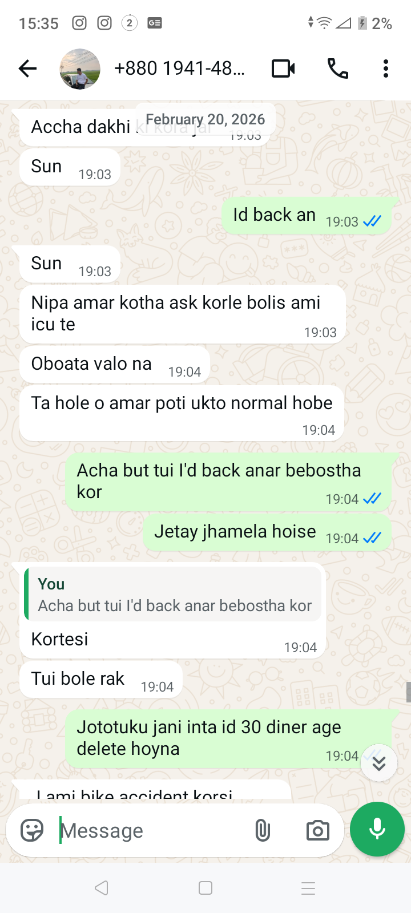

I wish Ami straight point e dhukte partam but middle e eto kisu hoise.
But Amar role oikhane Bangla 1st paper novel er Rafik er moto chilo. Rafik dekhaise Pakistan er partner chilo but o actually Bangladesher jonno chilo. He was not afraid of being called rajakar ar Ami afraid chilam na eta shunte je Ami Arnob ke help korsi because Ami ei incident er first 2 days or sathe chilam.
I don’t know tomra Amar letter er ei part bujhba naki, maybe some proofs help korte pare tomader bhujte. Remember tomader sathe jhogra korar shomoy Maliha amake ekta accusation disilo, but jokhon proof soho Amar intentions dekhaisi she kinda backed down a little but o oi time e amader friend chilona, ei bahana banay oitar kotha thamay dise.
O nijei bujhse I wasn’t going to help him. O literally nije amake mana kortese eishob niye help korte, but Amar pera ki Ami perfect time ei or shob ill intentions thamay disi joto tuku Ami parsi. Ei stage ta oi novel er sathe mile jay jetay major ejaj ter paitesilo Rafik. Ain’t gonna help him ar or intentions different.
Ohhh o first day thekei ekta message dewaite chaisilo. Ami 3 din boshay rakhsi, er majhe school eo Nipa, tomar sathe dekha hoise, class korsi, even amra lift eo uthsilam. Ami oi msg to deyar kotha mention o korinai.
Wait oi msg ta dekhai.
---
📸 PHOTO SECTION





---
First 3 ta pic eki bishoy er. Ami jodi dite chai ditam, Ami okey internally help kortam, Ami just external help dekhaisi ar nije nije investigation korsi oi account kar ar ki niye account banaise.
Middle e Nipa ke WhatsApp e ekbar amake onek jor kore ekta msg o pathaisilo, oita ami jor kore delete koraisi ar ekta casual msg diye change koray disilam jate kichu mone na koro. But bhalo hoise amake block kore rakhsila.
Time moto oita change na korte parle Ami bolte partam na ekhon.
Ohh yeah finally, eta bhabio na je or goals puron hoy nai dekhe ekhon Ami kotha change kortesi.
Shobcheye fun ekta bishoy tomra amake block kore rakhsila eijonno Amar proofs gula aro “juicy” hoise.
Dekho 20 February ratei Ami shobar kache bole disilam Ami nai ei topic e. Because Amar kaj to sesh hoye gesilo. 3 jon er sathe add chilo — Maliha, Sawda, Nipa.
Ar aro mojar bishoy, next day Arnob amake bole “bhi tui ar help korisna”.
Bhi Ami ar pics add korbona onek hard nipa, malihar acc eo check koro Ami oi same time e sobar kache bole disi je Ami nai, but o amake block kore rakhsilo so she jante parenai.
tomra pore bhujba jodi shamnashamni kotha hobe je it was important for me to be there with him oi first er few days, ekhon to partial bhujla but eto kisu lekhle onek boro hoye jabe.
Acha byeeee Amar main letter er next page e jaite paro.